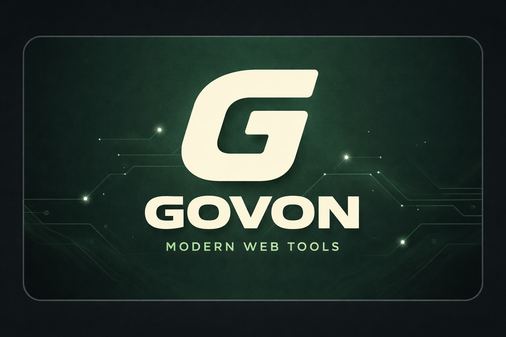

프로젝트 소개
GovOn은 대한민국 행정 공무원의 민원 처리를 지원하는 에이전틱 AI 시스템입니다. 자연어 입력으로 민원을 분석하고, AI가 관련 법령·유사 사례를 검색한 뒤, 사람의 승인을 거쳐 응답을 생성합니다.
- Shell-first, Local-first 설계
- Human-in-the-Loop 승인 게이트
- LoRA 어댑터 기반 도메인 특화 응답
- ReAct + ToolNode 에이전트 루프

기술 스택
EXAONE 4.0-32B
LangGraph
vLLM
FastAPI
QLoRA r16
FAISS
Next.js 16
Rich CLI
- EXAONE 4.0-32B-AWQ (4-bit NF4 양자화)
- LangGraph ReAct 에이전트 런타임
- FAISS + BM25 하이브리드 RAG
- 민원 응답 / 법률 인용 LoRA 어댑터
- SQLAlchemy 세션 영속화
주요 기능
- 자연어 민원 분석 및 의도 파악
- 정부 API · 통계 자동 조회 (Tier 0)
- 민원 응답 / 법률 인용 생성 (Tier 1 승인)
- 멀티턴 대화 및 세션 이어가기
- DORA Elite 등급 CI/CD 파이프라인
팀 소개
- umyunsang — 리드 아키텍트
- yuujjjj — 코어 개발
- siujang — 통합 지원